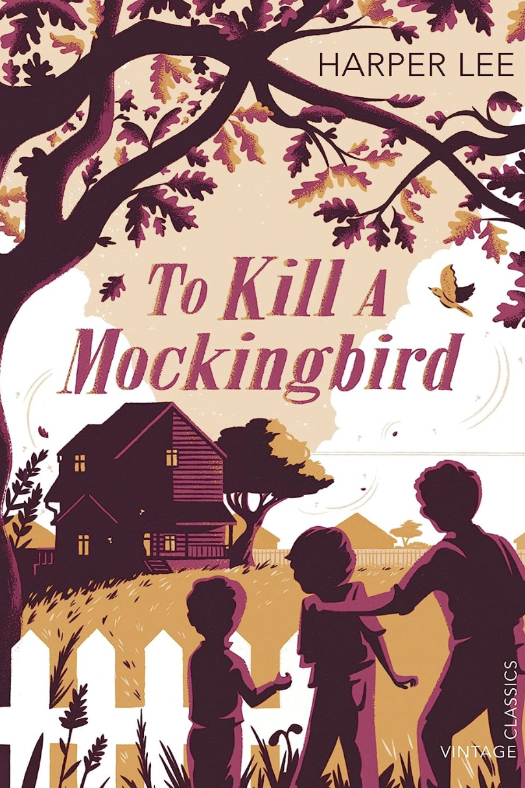
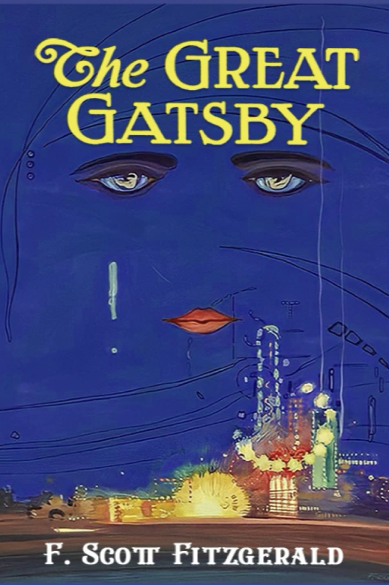
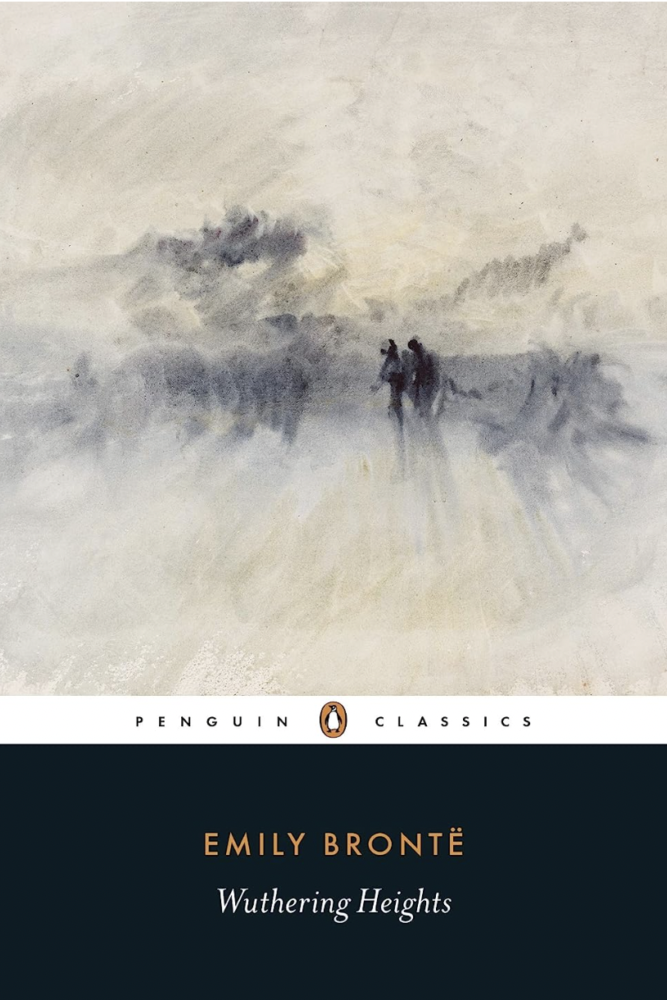
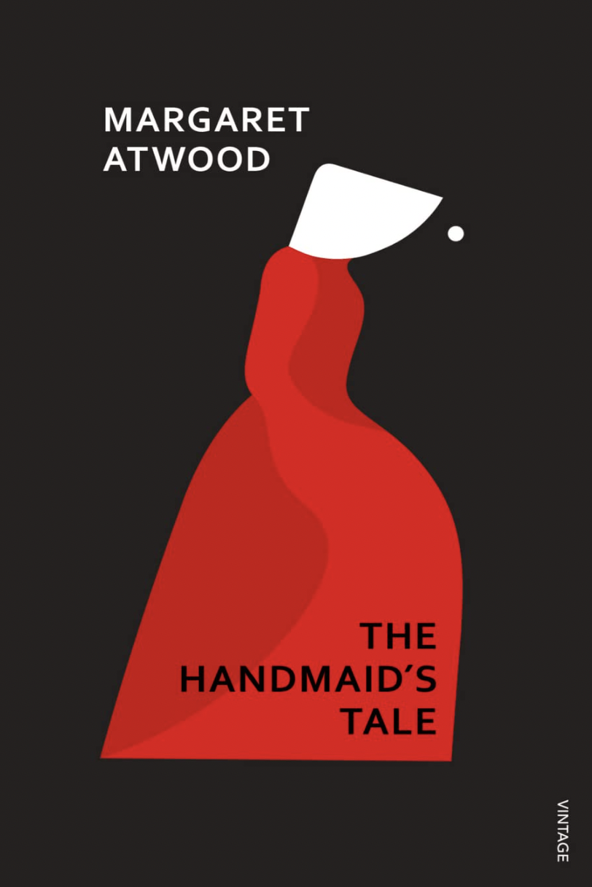
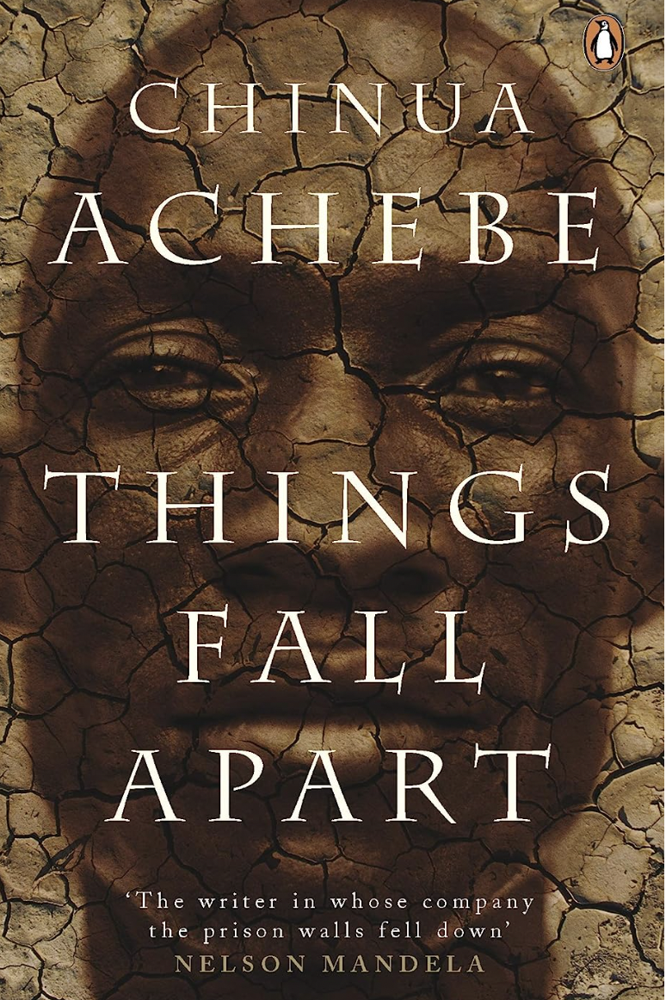
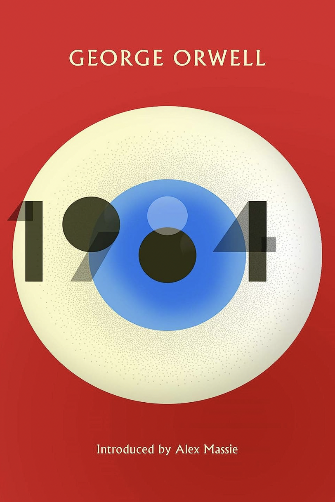
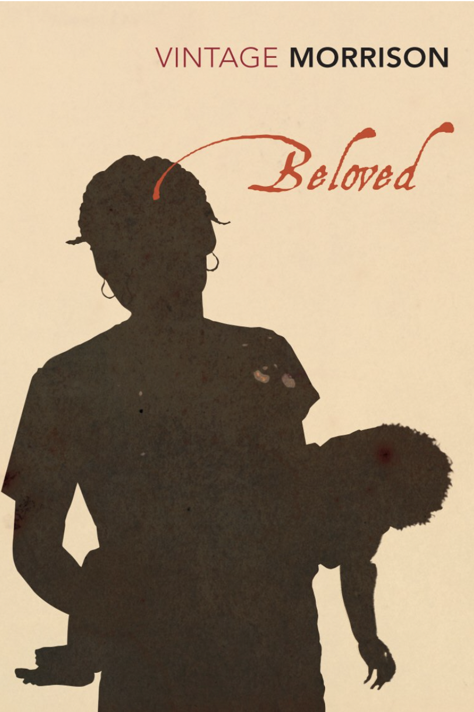
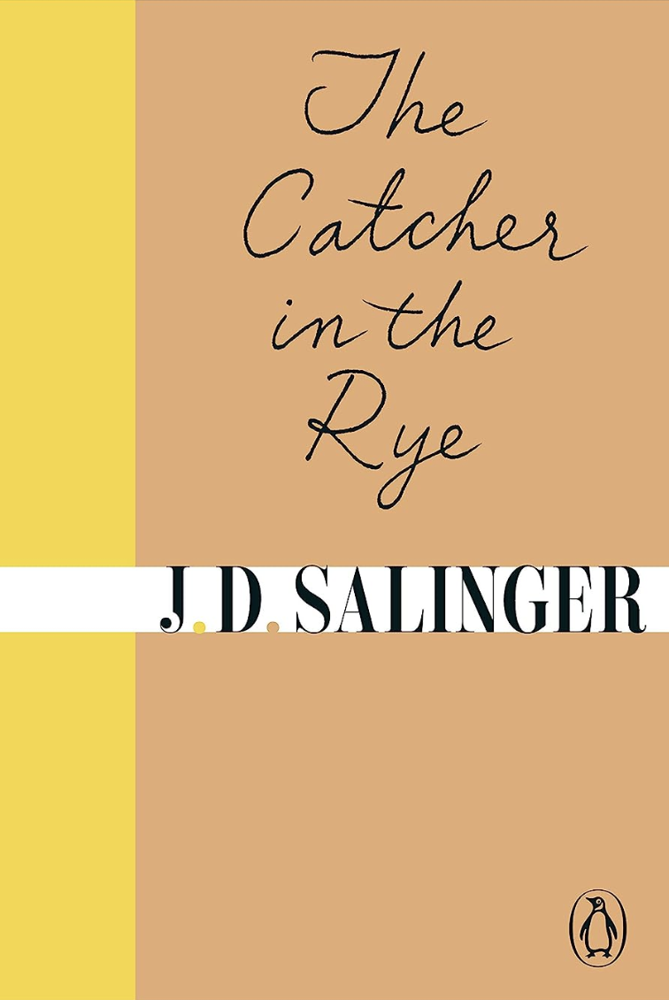
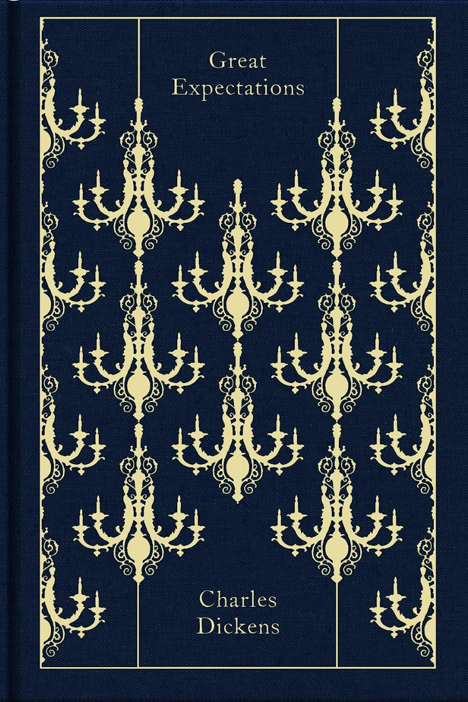
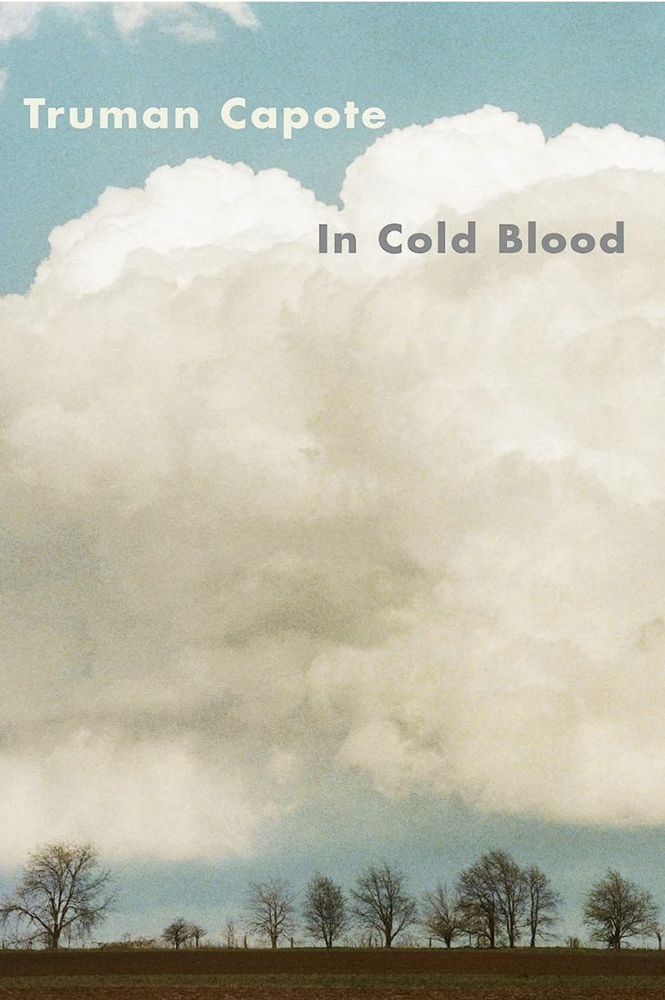

The top 10 books to read in your lifetime
From To Kill A Mockingbird to Wuthering Heights, these are the all-time literary classics everyone should have on their reading list

It seems as if every week, there's a new 'must read' hitting shelves, making it harder than ever to keep up with the zeitgeist when it comes to your personal book list. But while there are many, many novels out there to enjoy, some are considered arguably greater or more important than others – whether for their excellent prose, thought-provoking storylines or the boundaries they broke at the time of publishing. However much or little you like to dip into the pages of a novel, there are some books everyone should consider reading at least once in their life.
To give yourself a good literary grounding, we've narrowed it down to our top 10 must-read novels, many of which are still included on school reading lists to this day. From Harper Lee's exploration of racial tensions in To Kill a Mockingbird, to Emily Brontë's gothic romance Wuthering Heights and F. Scott Fitzgerald's Jazz Age masterpiece The Great Gatsby, these are the classic books we can bet you'll want to revisit time and time again.
For more reading inspiration, see our guide to the best modern love stories, the 10 ultimate summer reads, and our edit of uplifting memoirs and autobiographies to educate and inspire – or get lost in our round up of absorbing page-turners.
Harper Lee, 'To Kill A Mockingbird'
Harper Lee's classic tale set in 1930s Alabama is perhaps the seminal text on racial tensions in the Deep South. The story follows the white lawyer Atticus Finch as he attempts to save the life of Tom Robinson, a Black man falsely accused of raping a white woman. The innocence of the narrator – Finch's six-year-old daughter, Scout – only serves to highlight the unfairness and incomprehensibility of the situation. A true American classic, To Kill A Mockingbird approaches the thorny issue of racism in the USA with humour, warmth and compassion, making it widely recognised as one of the greatest books of the twentieth century. Lee published a follow-up novel in 2015, Go Set A Watchman, which is set in the 1950s and shows the progression of the characters two decades on. It not only confirms the brilliance of To Kill A Mockingbird, but adds new context and meaning to the classic.
F. Scott Fitzgerald, 'The Great Gatsby'
The Great Gatsby, F. Scott Fitzgerald's third book, stands as the supreme achievement of his career. This exemplary novel of the Jazz Age has been acclaimed by generations of readers. The story of the fabulously wealthy Jay Gatsby and his love for the beautiful Daisy Buchanan, of lavish parties on Long Island at a time when The New York Times noted "gin was the national drink and sex the national obsession," it is an exquisitely crafted tale of America in the 1920s. The Great Gatsby is one of the great classics of twentieth-century literature.
Emily Brontë, 'Wuthering Heights'
Many people, generally those who have never read the book, consider Wuthering Heights to be a straightforward, if intense, love story — Romeo and Juliet on the Yorkshire Moors. But this is a mistake. Really the story is one of revenge. It follows the life of Heathcliff, a mysterious gypsy-like person, from childhood (about seven years old) to his death in his late thirties. Heathcliff rises in his adopted family and then is reduced to the status of a servant, running away when the young woman he loves decides to marry another. He returns later, rich and educated, and sets about gaining his revenge on the two families that he believed ruined his life.
Margaret Atwood, 'The Handmaid's Tale'
The Handmaid’s Tale is set in a post-civil war version of America. Fertility rates have dropped and a religiously conservative government - known as the Gilead - has taken over control. There are new social classes and women are brought under strict control. Women who divorce and remarry, who are homosexuals (in the show these are called gender traitors), and those who have left the Christian faith. Women who are fertile are brutally enslaved to be raped and give birth to children to their male masters. These are known as the handmaids. It tells the story of Offred, our protagonist, a handmaid tasked with bearing children for the elite of Gilead, a totalitarian society that took over the United States following a military coup. The novel is set in the near future and includes flashbacks to Offred's life before Gilead was established. The Handmaid's Tale has been adapted into a TV show on Hulu starring Elisabeth Moss (who also played Peggy Olson in Mad Men). The show follows its source material closely, but adds more detail and backstory to make it more accessible to viewers who haven't read the book.
Chinua Achebe, 'Things Fall Apart'
Okonkwo is the greatest wrestler and warrior alive, and is famous throughout West Africa – but when he accidentally kills a clansman, his life begins to unravel. Okonkwo is exiled, and when he returns, he finds missionaries and colonial governors have arrived in his village. First published in 1958, Nigerian-born Chinua Achebe's novel reshaped both African and world literature, and has gone on to sell over 10 million copies in forty-five languages. If you love it as much as we do, you'll be glad to know it's part of a trilogy: two novels (Arrow of God and No Longer at Ease) follow on, chronicling the fate of this African community.
George Orwell, '1984'
Perhaps the most brilliant ever dystopian depiction of a totalitarian society, 1984 is as much a historical and cultural polemic as it is an absorbing thriller. Words from the novel have permeated our commonplace lexicon ('doublethink' and 'Big Brother' among them) and the book continues to be influential today. As the critic and author Jonathan Freedland wrote about 1984, "it has become a shorthand for... the surveillance state, for the power of the mass media to manipulate public opinion, history and even the truth". A book that encompasses freedom, betrayal and the power of protest, it's a cornerstone of British literature.
Toni Morrison, 'Beloved'
Part ghost story, part profound reflection on the evils of slavery, this Pulitzer-winning novel is American writer Morrison's crowning achievement. Dedicated to the ‘Sixty Million and more’ Africans and their descendants who died as a result of the slave trade, the novel is set in the mid-1800s, in the aftermath of the American Civil War. It tells the story of Sethe, abandoned by her sons and living with her youngest daughter in Cincinnati, traumatised by memories of her past life as a slave at Sweet Home in Kentucky. When another Sweet Home survivor appears at her door, it heralds the arrival of another: a mysterious woman, calling herself 'Beloved'. An astonishing feat of storytelling, Beloved interweaves ideas of motherhood, family, folklore and community with the horrors of history.
J.D. Salinger, 'The Catcher in the Rye'
A witty and wise coming-of-age story, The Catcher in the Rye is a true timeless classic. It's Christmas and Holden Caulfield has just been expelled from yet another school. He floats around New York City seeking solace in fleeting encounters, always thinking of his younger sister Phoebe, the only person who really understands him. An elegy to teenage alienation, capturing the need for connection and the bewilderment of adolescence, this story is as relevant today as it was when it was first published in the 1950s.
Charles Dickens, 'Great Expectations'
An orphaned child with little or no prospects, Pip expects very little from life. But Pip's narrow existence is blown apart when he finds an escaped criminal, is summoned to visit a mysterious old woman and meets the icy beauty, Estella. Most astoundingly of all, an anonymous person gives him money to begin a new life in London. Credited by some with inventing the detective novel and one of the most popular novelists of his day, Dickens remains one of the best-loved writers in the English language – if you're going to read any of his works, make it Great Expectations. If it gives you a taste for the author, we'd also recommend Oliver Twist, A Tale of Two Cities, and David Copperfield; the latter has recently reworked by Women's Prize for Fiction winner, Barbara Kingsolver.
Truman Capote, 'In Cold Blood'
Often described as the first 'non-fiction novel', Truman Capote’s infamous account of the appalling murder of a Kansas family which gripped and terrified America in the 1950s is perhaps the greatest blockbuster true crime story. If you're a fan of the many podcasts, TV series and books that now populate this genre, you'll love this remarkable mixture of journalistic skill and emotive narrative. Capote's comprehensive study of the killings and subsequent investigation explores is impossible to put down.